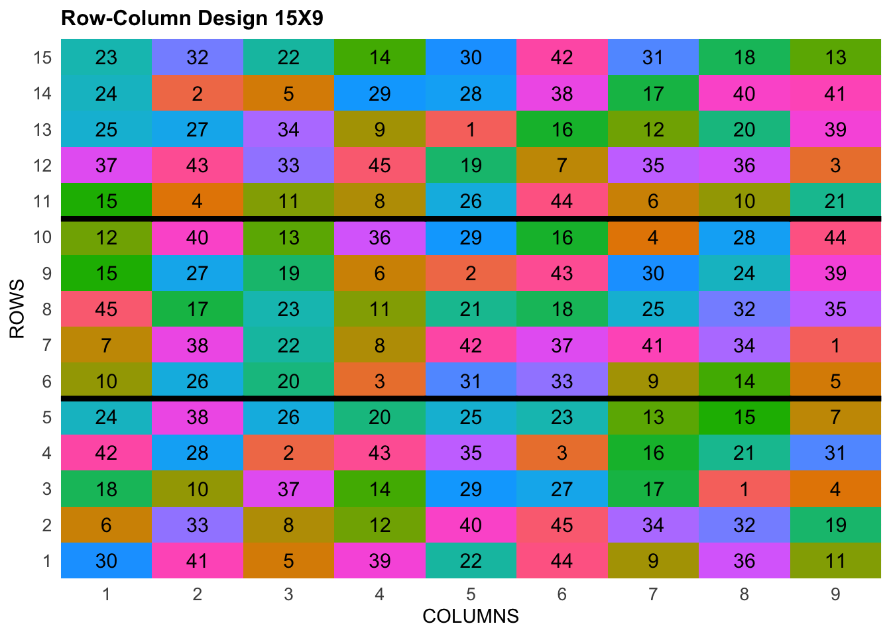

![]()
#Install and load FielDHub package
library(FielDHub)Introduction
In the realm of agricultural research, particularly plant breeding, precision is paramount. The quest to identify superior plant varieties requires experiments that can accurately attribute observed differences to genetic factors rather than environmental noise. This is where the row-column design comes into play, a sophisticated statistical methodology designed to enhance the reliability of field trials by controlling spatial variation.
What is Row-Column Design?
At its core, a row-column design involves arranging experimental units into a grid of rows and columns. This organization allows researchers to control two sources of spatial variation simultaneously. Each cell in the grid, or plot, hosts a specific genotype (or treatment), which is randomly assigned to ensure unbiased results.
Why is it Important?
Field trials often face the challenge of spatial heterogeneity—variations in soil fertility, moisture, sunlight, and other environmental conditions. These variations can introduce significant noise into the data, potentially obscuring true genetic differences. By accounting for variations along both rows and columns, the row-column design mitigates these effects, leading to more precise and reliable experimental outcomes.
Key Features
- Grid Layout: The field is divided into a systematic grid, creating rows and columns that structure the experimental units.
- Randomization: Treatments are randomly assigned to each plot within the grid, minimizing bias.
- Control of Variation:
- Row Effects: Horizontal variations such as soil fertility gradients or irrigation patterns.
- Column Effects: Vertical variations such as different drainage conditions or sunlight exposure.
Advantages of Row-Column Design
- Increased Precision: By controlling for two dimensions of variability, this design reduces experimental error, enhancing the accuracy of genotype evaluations.
- Flexibility: Adaptable to fields with irregular shapes or non-uniform conditions, making it versatile for various agricultural scenarios.
- Improved Accuracy: Better control of environmental variation ensures that performance differences are more accurately attributed to genetic factors.
Row-Column Design with FielDHub R Package
To facilitate the implementation and analysis of row-column designs, researchers can utilize the FieldHUB R package. FieldHUB is a powerful tool specifically developed for managing and analyzing field trial data. It provides a user-friendly interface and a suite of functions tailored to the unique needs of agricultural experiments.
- Design Creation: FieldHUB allows researchers to easily set up row-column designs, specifying the number of rows and columns, and randomizing the assignment of treatments.
- Data Management: The package streamlines data entry and management, ensuring that all experimental data are accurately recorded and organized.
- Visualization: FieldHUB offers various visualization tools to help researchers understand spatial patterns and variations within their trials, aiding in the interpretation of results.
- Statistical Analysis: Integrated with R’s robust statistical capabilities, FieldHUB can perform complex analyses, including mixed models and ANOVA, tailored to row-column designs.
By leveraging the FieldHUB R package, researchers can enhance the efficiency and accuracy of their field trials, making the row-column design more accessible and practical for large-scale agricultural research.
Using the FielDHub function: row_column()
First, you need to load the FielDHub package by typing
Then, you can enter the information describing the above design like this:
rcd <- row_column(
t = 45,
nrows = 5,
r = 3,
l = 1,
plotNumber = 101,
locationNames = "FARGO",
seed = 1244
)The description for the inputs that we used to generate the design,
t = 45is the number of treatments.nrows = 5is the number of rows.r=3is the number of repsl = 1is the number of locations.plotNumber = 101is the starting plot number.locationNames = "FARGO"is an optional name for each location.seed = 1244is the random seed to replicate identical randomizations.
To print a summary of the information that is in the object rcd, we can use the generic function print().
print(rcd)Resolvable Row-Column Design (Two-Step Optimization)
Efficiency of design:
Level Blocks D-Efficiency A-Efficiency A-Bound
1 Rep 3 1.0000000 1.0000000 1.0000000
2 Row 15 0.8940599 0.8767433 0.8842892
3 Column 27 0.7912130 0.7623893 0.7674419
Information on the design parameters:
List of 7
$ rows : num 5
$ columns : num 9
$ reps : num 3
$ treatments : num 45
$ locations : num 1
$ location_names: chr "FARGO"
$ seed : num 1244
10 First observations of the data frame with the row_column field book:
ID LOCATION PLOT REP ROW COLUMN ENTRY TREATMENT
1 1 FARGO 101 1 1 1 30 G-30
6 2 FARGO 102 1 1 2 41 G-41
11 3 FARGO 103 1 1 3 5 G-5
16 4 FARGO 104 1 1 4 39 G-39
21 5 FARGO 105 1 1 5 22 G-22
26 6 FARGO 106 1 1 6 44 G-44
31 7 FARGO 107 1 1 7 9 G-9
36 8 FARGO 108 1 1 8 36 G-36
41 9 FARGO 109 1 1 9 11 G-11
2 10 FARGO 110 1 2 1 6 G-6The row_column() function returns a list consisting of all the information displayed in the output tabs in the FielDHub app: design information, plot layout, plot numbering, entries list, and field book. These are accessible by the $ operator, i.e. rcd$layoutRandom or rcd$fieldBook.
rcd$fieldBook is a list containing information about every plot in the field, with information about the location of the plot and the treatment in each plot. As seen in the output below, the field book has columns for ID, LOCATION, PLOT, REP, ROW, COLUMN, ENTRY, and TREATMENT.
field_book <- rcd$fieldBook
head(rcd$fieldBook, 10) ID LOCATION PLOT REP ROW COLUMN ENTRY TREATMENT
1 1 FARGO 101 1 1 1 30 G-30
6 2 FARGO 102 1 1 2 41 G-41
11 3 FARGO 103 1 1 3 5 G-5
16 4 FARGO 104 1 1 4 39 G-39
21 5 FARGO 105 1 1 5 22 G-22
26 6 FARGO 106 1 1 6 44 G-44
31 7 FARGO 107 1 1 7 9 G-9
36 8 FARGO 108 1 1 8 36 G-36
41 9 FARGO 109 1 1 9 11 G-11
2 10 FARGO 110 1 2 1 6 G-6For plotting the layout in function of the coordinates ROW and COLUMN, you can use the the generic function plot() as follows,
plot(rcd)
Analytical Techniques
The data from row-column designs are typically analyzed using mixed models or ANOVA, with row and column effects included as factors. Advanced statistical software like R (using packages such as lme4, asreml, SpAtS, and statgenSTA) and SAS provides robust tools for handling the complex data structures generated by these designs.
Conclusion
Row-column design stands as a critical tool for plant breeders, ensuring that the evaluation of new plant genotypes is as accurate and reliable as possible. By effectively controlling spatial variation in field trials, this design not only improves the precision of experimental results but also aids in the selection and development of superior plant varieties. As agriculture continues to evolve, methodologies like the row-column design will remain essential in advancing our understanding and cultivation of crops.
Citation
BibTeX citation:
@online{santos2024,
author = {Santos, Franklin},
title = {Enhancing {Plant} {Breeding} {Precision} with {Row-Column}
{Design}},
date = {2024-05-26},
url = {https://franklinsantosm.com/posts/row_column_design},
langid = {en}
}
For attribution, please cite this work as:
Santos, Franklin. 2024. “Enhancing Plant Breeding Precision with
Row-Column Design.” May 26, 2024. https://franklinsantosm.com/posts/row_column_design.